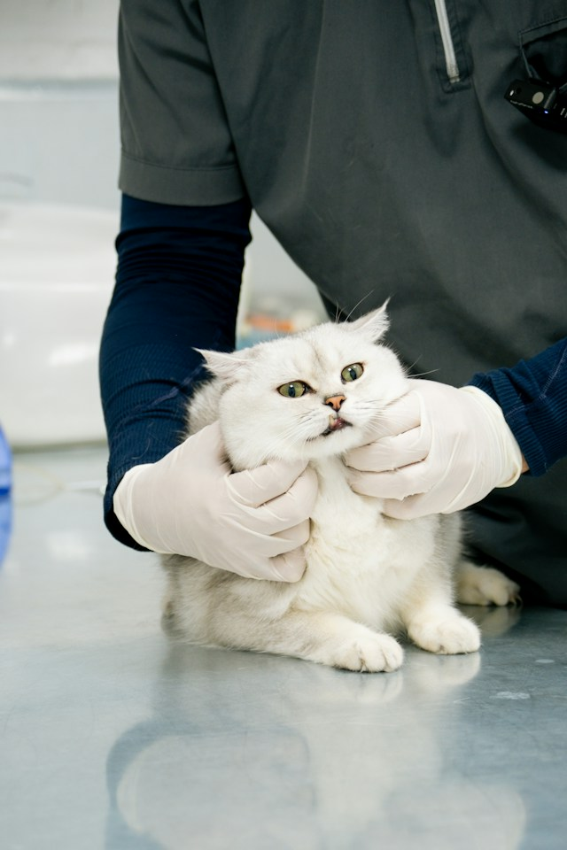
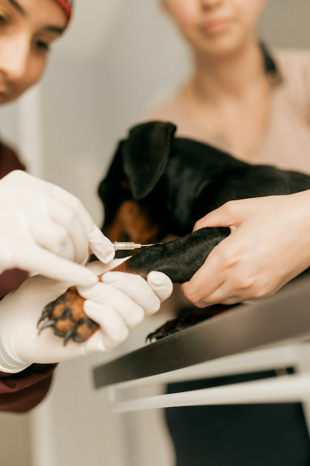
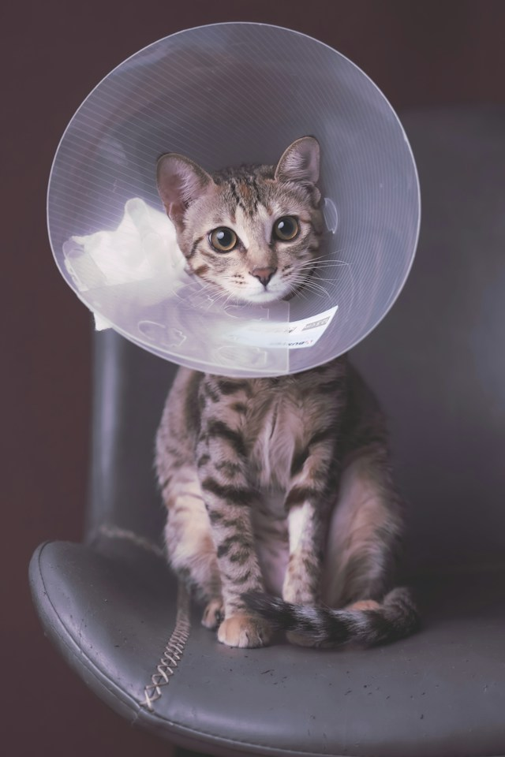
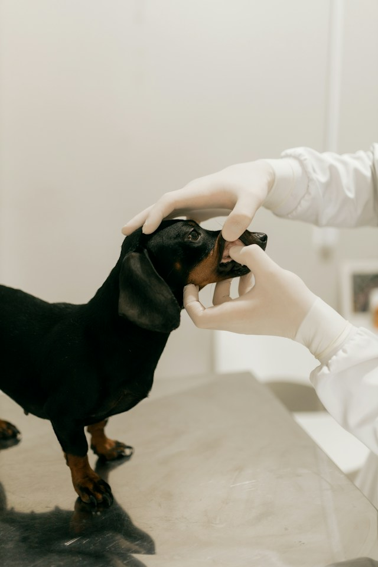
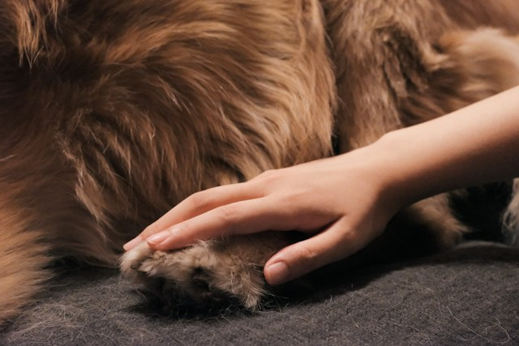

Full Service Animal Clinic
We offer a wide range of veterinary services
to keep your pets healthy and happy.

Preventative Care
Regular check-ups, vaccinations, and preventive treatments help keep your pets healthy and happy.

Diagnostics
We offer a variety of diagnostic services, including blood work and X-rays, to accurately diagnose your pet's health issues.

Surgery
Our skilled veterinarians perform a variety of surgical procedures to treat your pet's medical conditions.

Dental Care
We provide dental care services, including cleanings and extractions, to maintain your pet's oral health.

Pain Management
We offer comprehensive pain management solutions to help your pet feel more comfortable and improve their quality of life.

Puppy and Kitten Care
We provide specialized care for young animals, including vaccinations and socialization.

Senior Pet Care
We provide specialized care for aging animals, including health monitoring and management of age-related conditions.

Skin Conditions
We offer treatment for a variety of skin conditions, including allergies and infections.

Nail Trimming and Anal Gland Expression
We provide regular nail trimming and anal gland expression services to keep your pet clean and comfortable.

End of Life Care
We provide compassionate end-of-life care and support for you and your beloved pet.
Media Sources
All images used on this page are from Unsplash.com and are free to use under the Unsplash License.
- Home page background image of Manakin Sabot Veterinary Clinic taken by Maria M.
- Small orange kitten running across field
- Veterinarian examines a black dachshund's teeth - Attribution not required
- Cutting a dog's claws - Attribution not required
- A golden-brown dog scratching its muzzle with back leg - Attribution not required
- Veterinarian draws blood from small black dog - Attribution not required
- Cat sitting on a chair with an e-collar on - Attribution not required
- A person holding a white kitten - Attribution not required
- A close up of a dog looking off into the distance - Attribution not required
- A white and brown dog stretching on the floor - Attribution not required
- A white cat being examined by a veterinarian - Attribution not required
- A person holding a golden dog's paw - Attribution not required
- A dog paw prints in the sand on the beach - Attribution not required